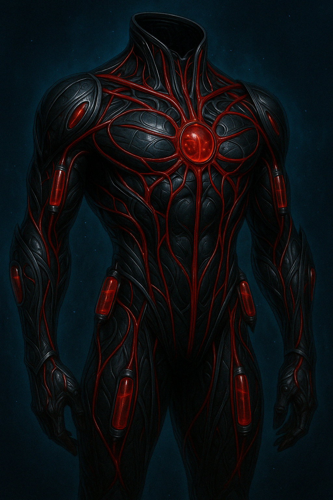
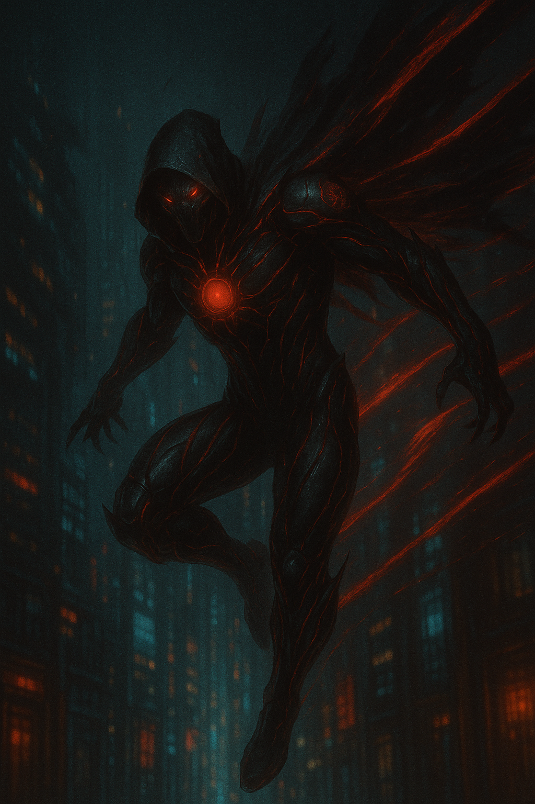
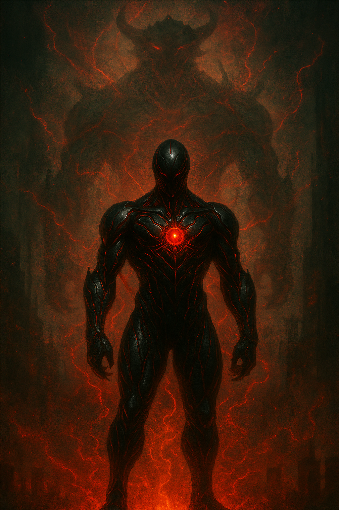
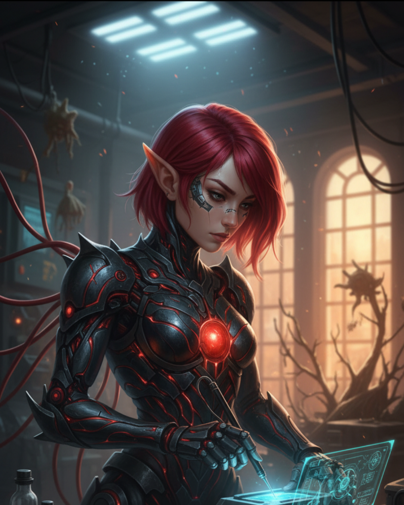

Duskkin
Summary
Cybernetic vampires blending ancient bloodlust with cutting-edge technology
Description
Nestled in the secluded northern reaches lies the enigmatic Duskkin Clan, a race of vampiric beings descended from ancient vampiric nobility. Renowned for their unique fusion of cybernetics and blood magic, the Duskkin have long embraced alchemical arts to augment and transcend their natural abilities.
Origins & Evolution
Over generations, the Duskkin's relentless pursuit of power and perfection led them down the path of experimentation, culminating in a groundbreaking synthesis of technology and vampiric magic. Their slender forms are often sheathed in sleek, futuristic armour that gleams dully in the shadows—a testament to their technological prowess. This armour, adorned with strange tubing and cables, integrates seamlessly with their physiology, enhancing their natural capabilities.
In the annals of Duskkin history, there was a time when these vampiric beings were not so different from the savage, human-preying vampires of legend. However, the turning point came with the Great Revelation—a period of enlightenment that swept through Duskkin society. The Duskkin elders, in their wisdom, recognised that the path of unrestrained human feeding would ultimately lead to their downfall.
Thus began the Great Transition, a time of profound change and adaptation. The Duskkin learned to harness the power of the blood of mythical creatures, discovering that this potent essence could sustain them in ways that human blood never could. This transformation established their cardinal law: never feed on humans—a prohibition enforced with brutal efficiency.
Sanguine Forging & Blood Potency
A cornerstone of Duskkin innovation is the practice of "sanguine forging"—a sacred ritual where blood is directly converted into energy. This energy is then used to power and fuse with mechanical body parts and weaponry, transforming the Duskkin into formidable cybernetic predators. This process symbolises a rite of passage, marking the transition from mere vampiric beings to apex hunters.
The blood potency system has created a complex hierarchy within Duskkin society. A hunter who feeds on a Prowler's blood might exhibit enhanced agility and stealth, their movements taking on feline grace. Feed on an Iron Bloom Behemoth, and your skin develops a metallic sheen whilst your strength multiplies exponentially. These manifestations serve as both mark of prowess and warning to adversaries.
The Urban Jungle
The Duskkin territory, known as the Urban Jungle, is a vast and sprawling landscape—a fusion of ancient magic and modern technology. Within this techno-organic maze roam mythical creatures of extraordinary power: Prowlers with spectral forms, Iron Bloom Behemoths whose metallic hides can withstand artillery, Shadow Beasts bound to elite warriors through blood magic rituals, and countless other specimens drawn to the territory's unique energy signature.
The Great Hunts
The Great Hunts are the spiritual cornerstone of Duskkin culture—ritualistic pursuits where cybernetically enhanced vampires clad in specialised armour track their quarry through neon-lit alleyways and biomechanical forests. Those who consistently bring down the most powerful prey are accorded immense respect and status. Their cybernetic modifications grow more elaborate with each successful hunt—additional data processing implants allow instant environmental analysis, blood magic receivers stream tactical information directly into their minds, enhanced sensory suites track prey across dimensions.
They're no longer merely vampires. They're apex predators engineered for perfection.
Abilities
- Sanguine Forging (Blood to Energy)
- Cybernetic Integration
- Blood Magic
- Enhanced Strength & Speed
- Instant Environmental Analysis
- Direct Data Streaming
- Blood Potency Manifestation
Gallery


